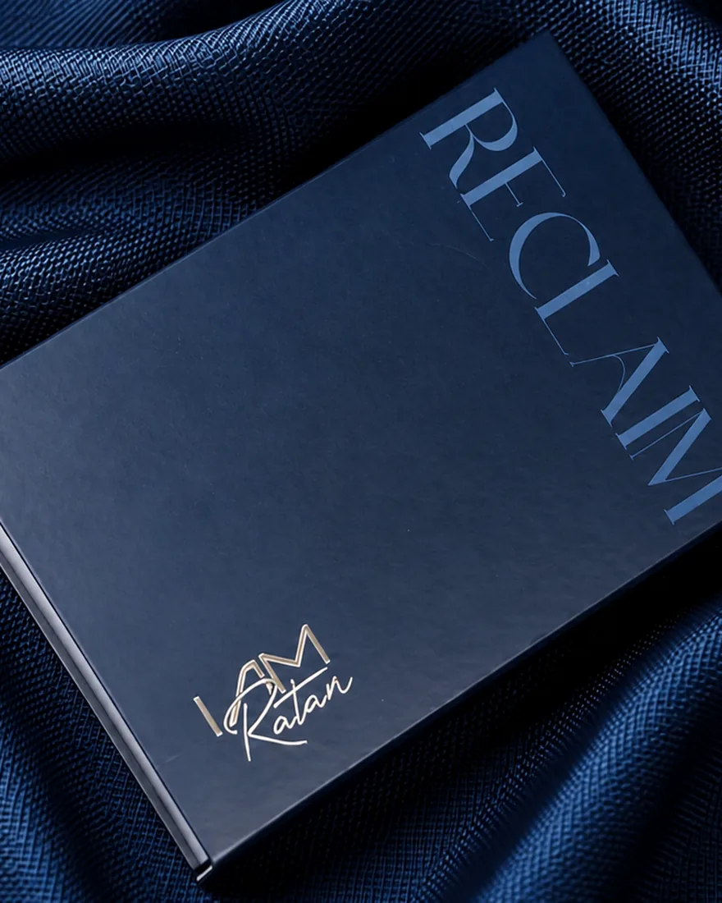
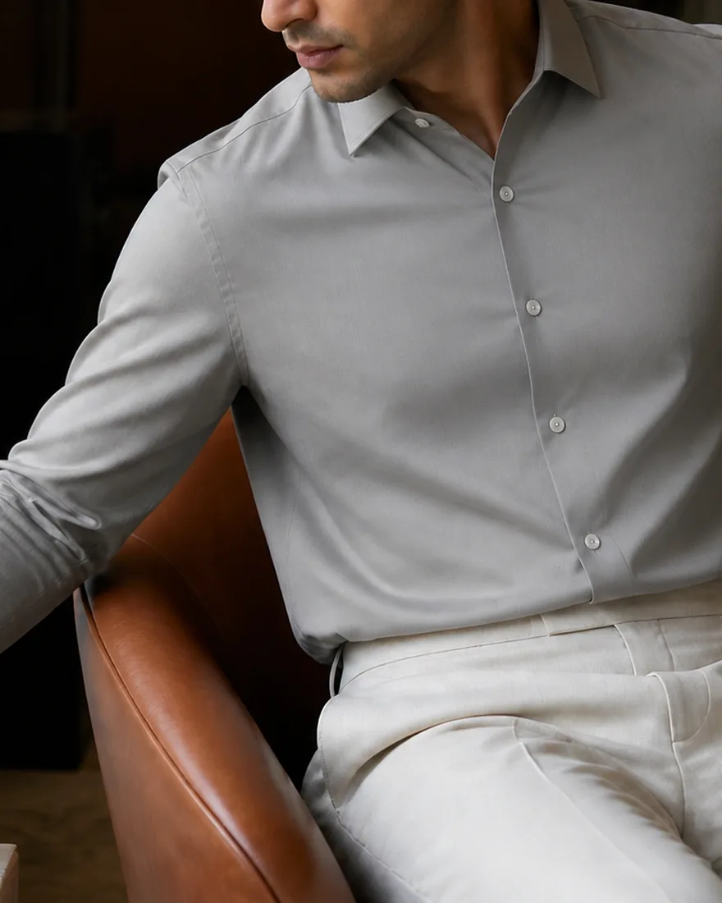
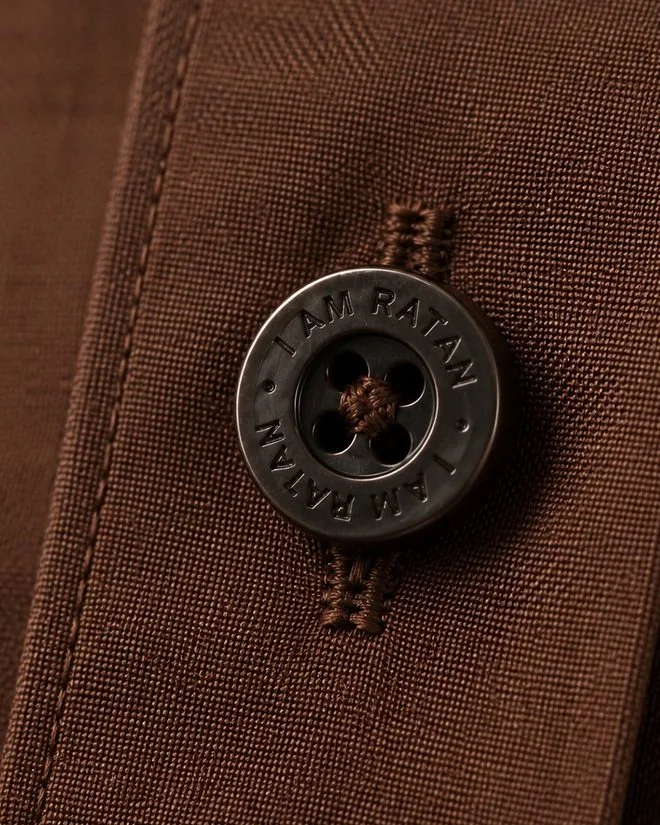
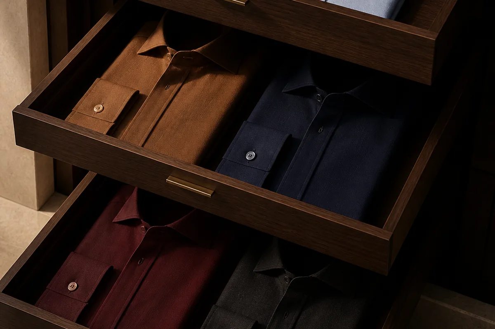

01 · On the house
Twenty years, no name on the box
For twenty years our work carried other people's labels. The making was ours.
Read the essayThe journal
On cloth, on colour, and on the details that only show at arm's length.

01 · On the house
For twenty years our work carried other people's labels. The making was ours.
Read the essay
02 · On wearing it
Fashion asks a garment to be noticed. We ask a shirt to belong.
Read the essay
03 · On detail
Craft is often invisible when it is done well. Nothing on a garment is an accident.
Read the essay
04 · On the future of menswear
Most wardrobes have a memory. The brands do not.
Read the essay